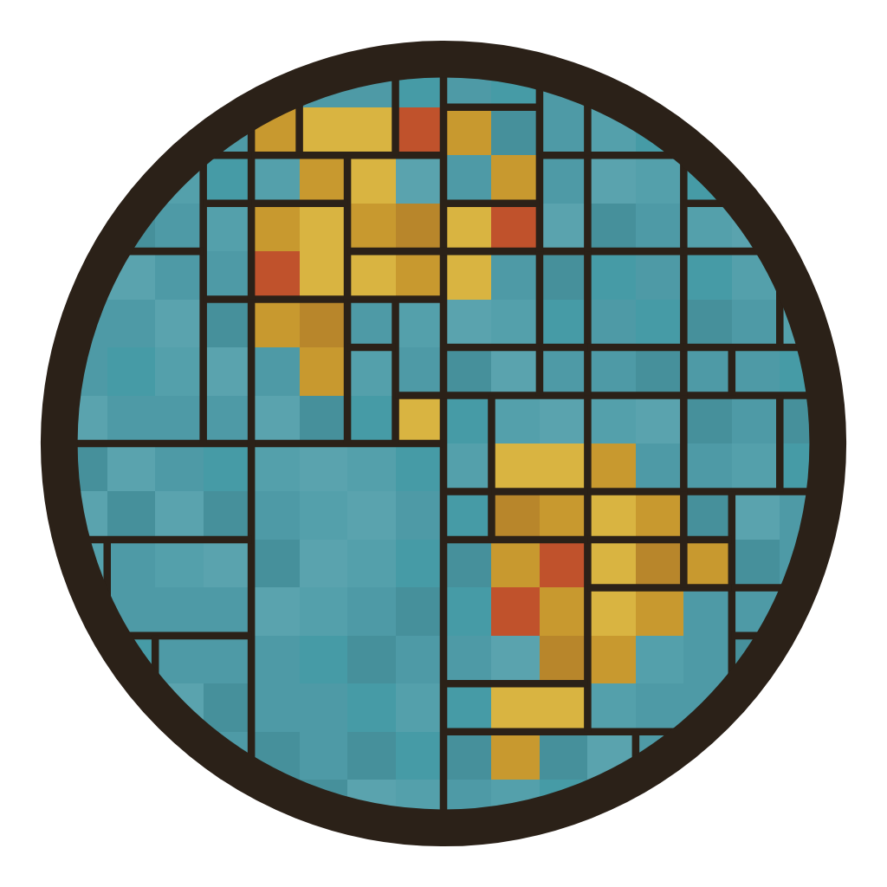

A game about machine learning wearing a blackjack costume. You design a small learning system, train it by letting it play thousands of hands against the dealer, and save it as a file. Then everyone loads their trained models into one tournament and the models play for money. Nobody programs a strategy. Each model has to discover, from winning and losing, what works.
The point is to feel the differences between kinds of learning: a lookup table that memorizes, a neural network that generalizes, a population that evolves, a learner that reasons from its nearest memories. Same game, five very different minds.
These are fixed for everyone and stamped into every saved model, so a fight is always fair. They are ordinary Las Vegas Strip rules.
| Decks | Five-deck shoe, reshuffled after three quarters are dealt. A single-deck, reshuffle-every-hand mode is available for training. |
| Dealer | Stands on soft 17. Peeks for blackjack when showing an ace or ten. |
| Blackjack | Pays 3 to 2. |
| Doubling | On any first two cards, and after a split. |
| Splitting | Up to four hands. Split aces get one card each. |
| Surrender | Late surrender allowed: give up the first two cards for half the bet. |
| Money | Start with 100 chips. Table minimum 1, maximum 25. Chip sizes 1, 2, 5, 10, 25. |
| Session | 300 hands. Go below 1 chip and you sit out for the rest of the session. |
The Train page walks through eight layers. Every control has an i that explains it. In short:
Nothing in the menu is labeled "card counting." The nearest thing is a sense called the discard tray: ten numbers telling the model how many of each card value have already been dealt since the last shuffle. Turn it on, train on the shoe, and a network can learn on its own that a tray full of low cards means the deck is rich and it should bet more. It has to find that from experience. A lookup table cannot even hold the tray, which is exactly why networks exist, and a good reason to train one model of each kind and compare. Watch the "average bet by true count" chart on the Train page to see whether your model found it.
Load everyone's models on the Tournament page. There are two ways to compete, and both are worth trying:
Blackjack is noisy, so the leaderboard reports the median result across many sessions along with the typical range, not a single lucky night. A model that wins on average can still lose a given evening, which is the whole reason casinos stay in business.
Two models are only really comparable if they are near the same size and have trained about the same amount. The file records both, and the tournament flags mismatches.
| By size | Featherweight under 200 parameters, Lightweight to 2,000, Middleweight to 20,000, Heavyweight beyond. |
| By experience | Rookie under 100k hands, Regular to 1M, Veteran to 10M, Grinder beyond. |